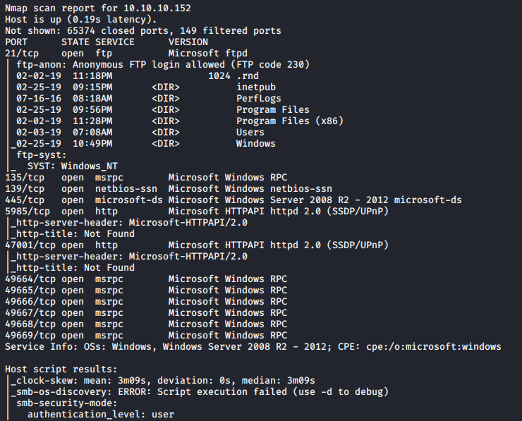

nmap results


\
since ftp is open u can upload a file there bt cant execute it though
u can only put and get files
tried the deafualt credentials

PRTG Network Monitor 18.1.37.13946
this is our version
https://www.exploit-db.com/exploits/46527
could try this bt its only for authenticated hi
so trying to find credentials now
https://kb.paessler.com/en/topic/463-how-and-where-does-prtg-store-its-data

thus got a hidden directory
went into all users
application
data
paessler
prtg network manager

bt there is a catch u can fo directly in the desired folder
Application data\Paessler\PRTG Network Monitor\

saw those downloaded files


bt password is encrypted
same issue with .old file

found in .bak file
and it worked on site

start burpsuite

this was from https://www.exploit-db.com/exploits/46527
so lets grab the cookie
so download the script

copy this cookie

thus it worked
also psexec couldve been used in meterpreter
bt there is another way too called impacket

this stuff is picked up less lightly by machines as compared to msfconsole and all

boom

we did it
tried same with wmiexec.py

also smbexec works the same way
so psexec gives u full permission as compared ot other 2
if u are against antivirus something so these 3 work better than meterpreter shell
sso like when we trie dpassowrds and stuff chage password ends with 2018 to 2019 coz thats what many users usually do